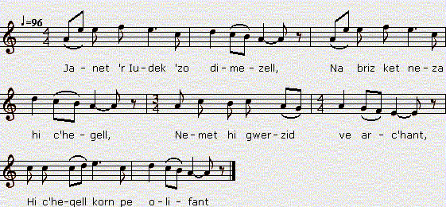

Janet ar Iudek (Stumm kentañ)
Jeannette Le Yudec (1ère version)
Chant à rapprocher de "Geneviève de Rustéfan" du "Barzhaz Breizh"
Texte recueilli par François-Marie Luzel:
Publié dans "Gwerzioù Breizh-Izel", tome 2, en 1874

Mélodie
Chantée par Marie-Jeanne Le Bail à Port-Blanc
tirée de "Musiques Bretonnes",
recueil de Maurice Duhamel publié en 1913
Arrangement Christian Souchon (c) 2012
Source: le site de M.Quentel, "Son ha ton" (voir "Liens")
|
VERSION "GWERZIOU BREIZ IZEL" I Janet 'r Iudek 'zo dimezell, Na briz ket neza hi c'hegell, Nemet hi gwerzid ve arc'hant, Hi c'hegell korn pe olifant. Janedik 'r Iudek, c'hui a gleo, Ken melenn hag 'nn aour e ho pleo; Pa vent melennoc'h un anter, Na po ket Fulup Ollier. Et eo d' Wengamp, 'boe diziou, Na ewit resev ann urzou, P'oa o tremenn gant he urzou Oa Janedik war hi zreuzou : Oa Janedik war hi zreuzou, Hi oc'h ourla mouchouerou ; Ha gant-hi tric'houec'h mouchouer, C'houec'h 'nn ez-he d' Fulup Ollier. II Fulup Ollier a lare, 'N ti 'r Iudek koz pa arrue : - Demad ha joa holl en ti-ma: - Ar Iudek koz pelec'h ema? - Ar Iudek koz a lavaras D' Fulup Ollier, p'hen klewas: Petra 'glaskes war-dro d'am zi, Mar na c'houlennes ket dimi ? - - Iudek koz, ho pedi a rann, Da donet d'am ofern gentann, Ha dont muia ma vo gallet, Met ho merc'h Janet na deui ket. Janedik 'r Iudek a laras, D' Fulup Ollier, p'hen klewas : - Bet-drouk gant ann nep a garo, D'ho ofern genta me 'ielo ; D'hoh ofern genta me ielo, Ha pewar fistol a brofo ; Pewar fistol me a brofo, Hag un douzenn mouchouero. - III Janedik 'r Iudek a lare, En bered ar ti ur p'arrue : - - Kompagnunes, d'in-me laret, Ann ofern nevez zo laret ? - Ann ofern newez n'eo ket bet, N'eo ket 'r belek ouit hi laret, Gant keun d' vraoa plac'h ar vro-man, M'eo d'ec'h, Janedik, a gredan. - Fulup Ollier 'tro 'nn asperges, A Krog Janet en he surplis : - Fulup Ollier, distreit ouzinn, Pec'het ho euz, balamour d'inn ! Mamm Fulup Ollier lare Da Janet 'r Iudek, en de-se; - Janet 'r Iudek savet ho penn, C'hui welo Jesuz 'n oferenn; C'hui welo Jesuz presantet Tre daoudorn ho muia karet... - A-gichenn 'nn aoter d'ann or-dal, Oe klewet kalon Janet 'strakal. Un' ar c'hureed 'c'houlenne : - A koad 'nn iliz 'strak er giz-se ? - Salv-ho-kraz, aotro, na eo ket, Janet 'r Iudek zo fatiket ! - VI Janedik 'r Iudek a lare Er ger d'hi zad, pa arrue : - Me ha d'am gwele, ha me klan, Bikenn ann ez-han na zavann ; Bikenn ann ez-han na zavann, Ken 'vo ur wes d'am liennan. Tric'houec'h amourouz kloarek 'm euz bet, Fulup Ollier ann naontekvet ; Fulup Ollier ann diweza, Laka ma c'halon da ranna ! - Fulup Ollier a lare Er ger d'he vamm pa arrue : - Me ha d'am gwele, ha me klan, Bikenn ann ez-han na zavann : M'ouifenn bout kaoz d' varo Janet, Me garie bikenn ofern n'am be laret ! - 'Ma ho c'horfo war ar varwskaon, Doue d' bardono ann anaon ! Et int ho daou er memeuz be, Pa n'int bet er memeuz gwele ! Notenn gant Luzel: (0) Kanet gant Mari-Job Kerival, Kerarborn, 1848. |
TRADUCTION FRANCAISE (de Luzel) I Jeanne Le Iudec est demoiselle, Et ne daigne pas filer sa quenouille, Si son fuseau n'est pas d'argent, Sa quenouille, de corne ou d'ivoire. - Petite Jeanne Le Iudec, vous l'entendez, Aussi blonds que l'or sont vos cheveux; Mais fussent-ils plus blonds de moitié, Vous n'aurez pas Philippe Olivier. Il est allé à Guingamp, depuis jeudi Pour recevoir les Ordres. Et comme il s'en retournait avec les Ordres, La petite Jeanne était sur le seuil de sa maison; La petite Jeanne était sur le seuil, Occupée à ourler des mouchoirs; Et avec elle dix-huit mouchoirs, Dont six pour Philippe Olivier. II Philippe Olivier disait, En arrivant chez le vieux Le Iudec : - Bonjour et joie à tous dans cette maison, Le vieux Le Iudec, où est-il? - - Le vieux Le Iudec répondit A Philippe Olivier, quand il l'entendit : - Que cherches-tu autour de ma maison, Si tu ne veux pas te marier? - Vieux Le Iudec, je vous prie De venir à ma première messe, Et de venir le plus possible, Si ce n'est votre fille Jeanne, qui ne viendra pas. - Jeanne Le Iudec répondit A Philippe Olivier, quand elle l'entendit : - Le trouve mauvais qui voudra J'assisterai a votre première messe, J'assisterai à votre première messe, Et je ferai mon offrande de quatre pistoles; Je ferai mon offrande de quatre pistoles, Et d'une douzaine de mouchoirs. - III La petite Jeanne Le Iudec disait, En arrivant dans le cimetière du Mur : (1) - Dites-moi, compagnie, Si la messe nouvelle est dite? - La messe nouvelle n'a pas eu lieu, Le prêtre ne peut pas la dire, Avec le regret de la plus jolie fille du pays, Et c'est vous, petite Jeanne, si je ne me trompe. - Quand Philippe Olivier faisait le tour de l'"asperges-me", Jeanne le saisit par son surplis : - Philippe Olivier, tournez-vous vers moi, C'est péché â vous, à cause de moi ! - La mère de Philippe Olivier disait A Jeanne Le Iudec, ce jour-là : - Jeanne Le Iudec, levez la tête, Vous verrez Jésus dans la messe; Vous verrez Jésus présenté Entre les mains de votre bien-aimé ! - Depuis l'autel jusqu'à la porte principale, On entendait le coeur de Jeanne qui éclatait ! Un des vicaires demandait : - Est-ce la charpente de l'église qui craque ainsi ? - Sauf votre grâce, seigneur, ce n'est pas, Mais c'est Jeanne Le Iudec, qui s'est évanouie! - IV La petite Jeanne Le Iudec disait A son père, en arrivant à la maison : - Je vais me mettre au lit, car je suis malade, Et jamais je ne m'en relèverai ; Jamais je ne m'en relèverai, Si ce n'est une fois, pour être mise dans un linceul. J'ai eu dix-huit amoureux clercs, Philippe Olivier est le dix-neuvième; Philippe Olivier, le dernier, Celui-là me brise le coeur ! - Philippe Olivier disait A sa mère, en arrivant à la maison : - Je vais me mettre au lit, car je suis malade, Et jamais plus je ne m'en relèverai : Si je savais être la cause de la mort de Jeanne, Je voudrais n'avoir jamais célébré la messe! - Leurs corps sont sur les tréteaux funèbres, Que Dieu pardonne à leurs âmes! Ils sont allés tous les deux dans le même tombeau, Puisqu'ils n'ont pas été dans le même lit ! Note de Luzel: (0) Chanté par Marie-Josèphe Kerival à Keramborgne en 1848. (1) S'agit-il ici da la commune de Mur, ou de l'ancienne église du mur, à Morlaix ? |
ENGLISH TRANSLATION I Unless her spindle be of horn She would not vouchsafe to spin yarn, Jenny Yudek, the young lady, With her distaff of ivory! - In spite of your golden blonde hair, Aye, and if it were twice as fair, His decision would not vary: Philip Olier you won't marry! He's been in Guingamp since Thursday Now to return he's on his way He was prepared to be ordained. And the unction he has obtained. - Seaming sixteen fine handkerchiefs Six of which adorned with motifs That she wants for him to withhold, He sees Jenny on her threshold. II Philip Olier was heard to say: - To all in this house, good day! To speak to Old Yudek I've come! - On entering Old Yudek's home, But Old Yudek he was not kind: - I wonder what you have in mind, If not to propose you are here. - He said to priest Philip Olier: - To ask you to hear my first mass, The lot of you, each lad and lass, Old Yudek, I came to your lair. Not Jenny: that would not be fair. At these words Jenny took offence. - To your mass I'll give attendance, Deem it, if you want, improper! She answered Philip Olier: To attend your first mass, I mean. Twelve handkerchiefs that I did seam. I shall give to the collection, And five pistoles in addition. III - Is that the end of the new mass? - Jenny Yudek said as she passed The threshold of the Mur churchyard, - Please, tell me, folks, do you depart? - The priest is so upset, alas, On account of a pretty lass, On account of you, I suspect. I fear, the solemn mass is wrecked. - During the sprinkling with hyssop, Done on behalf of the bishop, Jenny grasped him by his surplice: - Philip, upon me turn your eyes! Philip Olier's mother, who sat Next to her, has said: - To look at The host, raise your own head, Jenny! For Jesus is there, certainly, The host held in your lover's hands. - Whether near the church door one stands Or sits by the altar, all here Give a start at a noise they hear. - Was it the framework of the church? - With your leave, I think, nothing such. This cracking sound, distinct and quaint, It's Jenny who fell in a faint. IV As she returned to her homestead: - I am sick. I must go to bed From which I shall rise nevermore! - Jenny said staying in the door From my bed if I rise ever Who loved but one, Philip Olier, Though of suitors I had a crowd, 'T will be to be wrapped in a shroud. Philip has caused my heart to break! - The new made priest with sour heartache Returned to his parents at last, Who at his pallor were aghast. - Mother, make me my bed. I'm ill. This reading mass of mine does kill. I'll lie never to rise again. From reading mass I must refrain. They were laid on the same trestles. The same berth for two weak vessels: And for two lovers the same bed. O God, grant pardon to the dead! Note by Luzel: Sung by Marie-Josèphe Kerival at Keramborgne in 1848. Translated by Chritian Souchon (c) 2012 |

Retour à "Geneviève de Rustéfan"